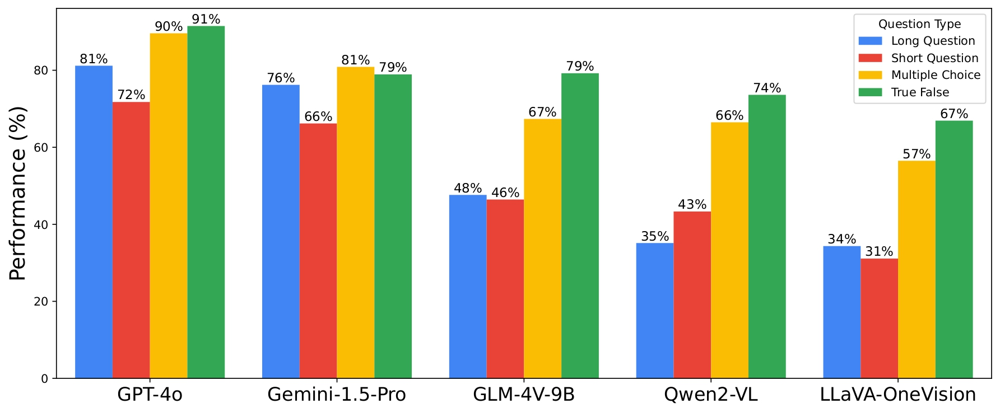

Based on the results of several LMMs on ALM-Bench, we draw key findings and show qualitative results. These insights can serve as valuable guidance for assessing the next generation of massively multilingual multimodal models in a standardized way, pushing the boundaries of LMMs towards better cultural understanding and inclusivity.
1) Overall Results. The overall results illustrates the performance of 16 LMMs on ALM-Bench, showing that closed-source models (e.g., GPT-4o and Gemini-1.5-Pro) outperform open-source ones, with GPT-4o achieving 78.8% accuracy compared to 51.9% for GLM-4V-9B. Both categories struggle with low-resource languages, with accuracy drops from 88.4% to 50.8% (GPT-4o) and from 80.3% to 15.6% (GLM-4V-9B) for Amharic. The benchmark also reveals a consistent performance gap between high- and low-resource languages across models, though Gemini-1.5-Pro stands out with minimal deterioration for low-resource languages.
2) The importance of visual contexts. Another important observation on experiment using only the base LLMs of various LMMs reveals the critical role of visual input in the ALM-Bench. GPT-4o's performance drops by 27.3% without images, highlighting significant gains with visual context in languages like Sinhala (38.7%), Sanskrit (50%), and Dutch (40%). Similarly, Qwen2-7B shows a 13% absolute and 24.8% relative drop in performance without visual input. These results emphasize the robustness of the benchmark and the reliance of LLMs on image inputs for accurate responses.
3) Comparison across language scripts. The comparison of 100 languages grouped by 24 distinct scripts in ALM-Bench reveals that both GPT-4o and Qwen2-VL struggle significantly with low-resource scripts like Ge’ez (Amharic), Sinhalese (Sinhala), Oriya (Odia), and Myanmar (Myanmar-Burmese). This highlights the predominant training focus on high-resource languages. An error analysis on cultural examples with native speakers identified six error types for GPT-4o: knowledge gaps, reasoning errors, perceptual issues, language errors, translation mistakes, and cultural misunderstandings, with knowledge gaps and cultural misunderstandings being the most common.
4) Comparison across language families. The analysis of LMM performance across 15 language families reveals that models perform significantly worse on African languages from the Atlantic-Congo family, such as Igbo, Kinyarwanda, Shona, Swahili, and Yoruba. In contrast, better performance is observed for Asian languages like Chinese, Korean, and Vietnamese, as well as Western languages such as English, French, and German.
5) Effect of question types. The analysis of question types shows that all models perform better on decision-making questions like MCQs and T/F questions. Closed-source models, such as GPT-4o and Gemini-1.5-Pro, handle long VQAs (LVQAs) better than short ones (SVQAs). In contrast, open-source models, including GLM-4V-9B and Qwen2-VL, perform better on SVQAs, struggling with long, accurate, and fluent responses across 100 multilingual settings.

6) Cultural awarness of LMMs. The study on the cultural awareness of LMMs shows that while GPT-4o achieves the highest overall score of 80.3%, there is significant variation in its performance across different cultural domains. For example, it scores 83.7% in Education and Heritage but drops to 72.7% in the Notable Key Figures category. This variation likely stems from the fact that categories like Education and Heritage are better represented in LMM training datasets, while culturally specific domains like Notable Key Figures and Customs vary more across languages and regions.
7) Impact of location-aware information in prompts. When evaluated with country-specific information, closed-source models like GPT-4o and Gemini-1.5-Pro show better performance, utilizing the added geographic context to enhance cultural specificity across languages. Open-source models do not benefit as much from the additional location-aware prompts.
| Models |
With Country Info. |
Without Country Info. |
| GPT-4o |
83.57% |
80.96% |
| Gemini-1.5-Pro |
81.52% |
76.19% |
| GLM-4V-9B |
56.78% |
56.41% |
| Qwen2-VL |
53.97% |
52.57% |
Table: We study the performance of various LMMs with and without additional country location information. Proprietary models show a notable performance boost of 2.6% to 5% when location-aware prompts are used, while open-source models exhibit a marginal improvement.
Qualitative exampels from GPT-4o on our ALM-Bench dataset
1) Success cases prediction: We present some qualitative examples for success cases by GPT-4o on various language scripts.
2) Failure Cases: We present some qualitative examples for failure cases by GPT-4o on various language scripts and domains. For the failure cases, we specify them in various error types including lack of knowledge, perceptual error, lack of cultural understanding, language error, and translation error.
3) Error types analysis: We show error analysis across 4 diverse language scripts, including Bengali, Sinhalese, Latin and Cyrillic on GPT-4o results, demonstrates significant challenges for even the top-performing closed-source models, particularly in cultural and reasoning comprehension. The ALM-Bench highlights these gaps, especially in languages with complex dialectal variations.
4) GPT-4o translation mistakes: To analyze these issues, mistakes from the GPT-4o model in translations are categorized into four
types: semantic error, cultural error, language error, and grammatical error. We sample 57 question-answer pairs from 51 randomly selected languages and plotted error distribution below. Notably, GPT-4o encounters more issues with semantic and grammatical accuracy when translating into different languages.
5) GPT-4o translation correction: We present qualitative examples of various mistakes in GPT-4o translation including translation, semantic, cultural and grammatical errors. We employ expert human-feedback to rewrite the correct translations for all samples in our ALM-Bench dataset.
Conclusion
In this paper, we introduce ALM-Bench, a novel multilingual multimodal cultural benchmark for evaluation with over 22.7k humanly verified samples across 19 domains. Our benchmark encompasses cultural nuances from 73 countries in 24 language scripts and 15 language families. We conduct empirical analysis on 16 vision-language models with
various question types (MCQs, T/F, SVQA, and LVQAs) and highlight notable disparities in their performance. The performance difference between the best-performing open-source model and the proprietary model, GPT-4o, is 27%. Our results also highlight that the models perform superior on predominant language scripts such as Latin, Cyrillic, and Devanagari and under-performs on underrepresented scripts such as Ge’ez, Lao, Sinhalese, and Oriya. Moreover, cultural understanding of prominent language families such as Indo-European, Austronesian and Afro-Asiatic are well represented by GPT-4o as compared to Atlantic-Congo and Turkic families. Our work highlights the limitations of state-of-the-art LMMs in multilingual and multicultural settings, showing key areas for improvement.
For additional details about ALM-Bench evaluation and experimental results, please refer to our main paper. Thank you!